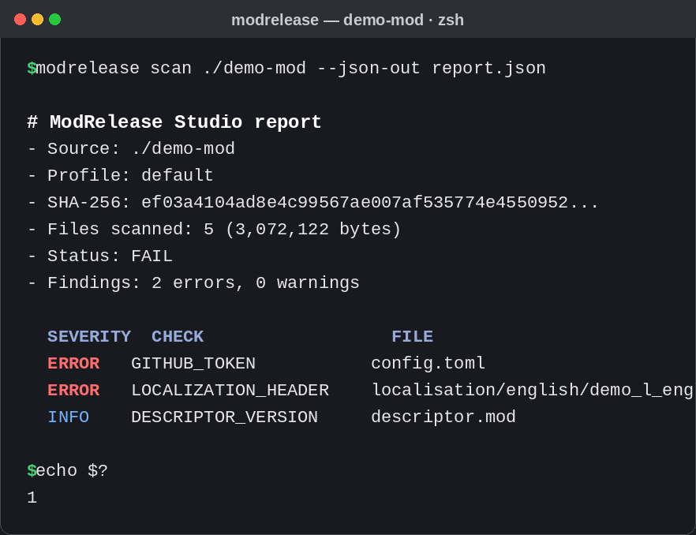

Структуру и архив
- опасные и дублирующиеся пути;
- конфликты регистра и Unicode-имён;
- лишние, слишком крупные и служебные файлы.
Релизный контроль для игровых модов
ModRelease Studio помогает авторам модов и сборок заранее находить проблемы в папке или ZIP: ошибки упаковки, случайно добавленные секреты и неполные метаданные.


Одна повторяемая проверка перед публикацией вместо ручного просмотра каждого файла. Сканер локальный: исходники никуда не отправляются.
descriptor.mod и YAML-локализации;Проверь папку, найди лишнюю вложенность, пропущенный файл или ошибку в метаданных и просмотри понятный отчёт.
Просканируй ZIP-файлы единым способом и сравни новую сборку с предыдущей, чтобы заметить неожиданные изменения.
Подключи ModRelease Gate v1.0.58: проверка и отчёты появятся рядом с изменениями.
Нужен Python 3.11 или новее. Для установки используй виртуальное окружение; ниже закреплена актуальная версия.
python -m venv .venv
# Windows: .venv\Scripts\Activate.ps1
# macOS / Linux: source .venv/bin/activate
python -m pip install "modrelease-studio @ git+https://github.com/GhosTnever-lkm/modrelease-studio.git@v0.3.74"
modrelease scan ./my-mod --md-out release-report.md --json-out release-report.json
modrelease compare ./previous-build ./candidate-buildSARIF можно отправить в GitHub Code Scanning отдельным workflow-шагом. Для этого в вашем workflow потребуется разрешение security-events: write; сам сканер ничего не загружает.
Базовый инструмент открыт для всех. Статусы и условия платных предложений указываю только после их реального выпуска.
Открытый MIT-инструмент: проверки, сравнение сборок и отчёты Markdown, JSON, SARIF.
Скачать ↗GitHub Action для CI и pull request. Код и инструкция доступны в отдельном репозитории.
Открыть Gate ↗Paradox Mod Quality Gate Pro v1.0.1 — отдельный Windows-интерфейс для пакетной проверки папок и ZIP. Включает бесплатные сканеры ModRelease Studio и Paradox Mod Workbench, объединённые HTML, JSON, Markdown и SARIF-отчёты. У ModRelease Studio нет отдельной платной версии.
Открыть Windows-набор ↗Если проект уже помог, можно поддержать разработку на Boosty или Buy Me a Coffee. Поддержка добровольная и не открывает скрытые функции.
Для ошибки приложи безопасный отчёт без секретов. Для запроса на индивидуальную проверку опиши игру, формат сборки и нужный результат.